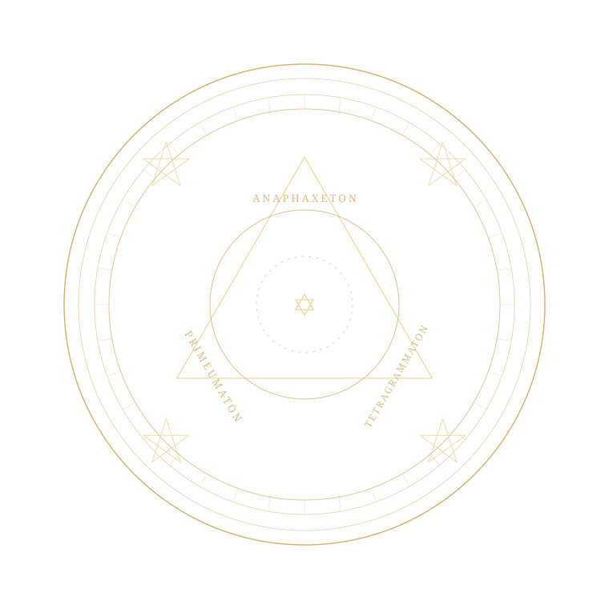

Spirits and Hierarchies
The grimoires are bureaucracies. Ranks, legions, offices, chains of command, forms of address: whatever the spirits are, the manuscripts describe them with the punctilious detail of a court register.
The Lesser Key of Solomon is a seventeenth century compilation of older material, and its first book, the Ars Goetia, lists seventy two spirits said to have been bound by Solomon, each with a rank, a number of legions, an office and a seal. Mathers and Crowley printed an English edition in 1904, which is the version most modern readers meet.
There are two honest ways to read such a list, and this cabinet keeps both open. The first is the tradition's own: these are entities, and the procedure is a negotiation with real powers under real safeguards. The second is psychological: a catalogue of seventy two autonomous complexes, each with its characteristic gift and its characteristic price, which is exactly how Jung described the figures of the unconscious. On either reading, the cautions in the manuscripts are worth keeping.
The seals below are drawn procedurally by this site from each name, in a consistent geometric manner. They are illustrations for study, and they are not reproductions of the manuscript seals.
The seventy two, in order
The seven planetary hierarchies
Each classical planet is given a sphere on the Tree, a day, a metal, a governing angel, an intelligence (the ordered, beneficent aspect) and a spirit (the raw, undirected one), together with a magic square whose every row, column and diagonal sums to the same number. The squares are genuine: you can check them.
Why each planet has two names
The distinction is precise and useful. The intelligence of a planet is its force under governance: Venus as attachment that builds something, Mars as courage that is aimed. The spirit is the same force unmediated: Venus as compulsion, Mars as rage. Traditional practice addresses the intelligence and constrains the spirit.
In Jungian terms this is the difference between a complex that has been related to and one that is running the house. The tradition arrived at the distinction several centuries earlier and gave both halves names.
On evocation
Every grimoire in this family insists on preparation, on the boundary of the circle, on a banishing at the end, and on never bargaining. Read psychologically, those instructions are sound practice: establish a frame, keep a standpoint, close the session, and do not make promises to a part of yourself that has you by the throat.
This cabinet gives the lists and the history for study. It does not provide evocation procedures, and it notes that people who pursue this material while unwell, or without a life outside it, tend to be harmed by it. See the caution.